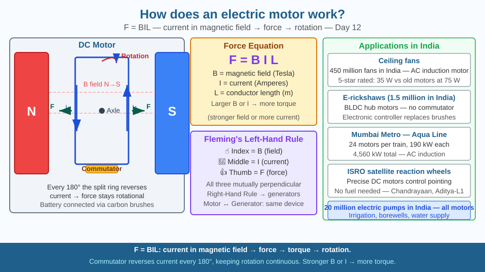

Discover why a coil carrying current in a magnetic field rotates — and understand the principle powering every fan, pump, train, and electric vehicle in India.
Every ceiling fan in India contains an electric motor. So does every water pump in every Indian household, every air conditioner, every electric rickshaw, and every metro train. Electricity flows in — mechanical rotation comes out. But why does passing electricity through a wire make it move? There is no explosion, no steam, no gears — yet a motor can produce enough force to accelerate a 22-tonne metro train. What is actually happening inside?
The Lorentz Force:
When a current-carrying conductor is placed in a magnetic field, it experiences a force. The magnitude is:
F = BIL
Where B = magnetic field strength (Tesla), I = current (Amperes), L = length of conductor (metres).
The direction is given by Fleming's Left-Hand Rule: point the index finger in the direction of the magnetic field, middle finger in the direction of current — the thumb points in the direction of the force on the conductor.
DC Motor structure:
How rotation is produced:
Power and efficiency:
Electrical power in: P = V × I. Mechanical power out: P = torque × angular velocity. Modern electric motors can exceed 95% efficiency — far better than petrol engines (~30%).
AC motors:
Most motors in Indian industry run on AC (alternating current from the grid). In AC induction motors (used in fans and pumps), the alternating current creates a rotating magnetic field that "drags" the rotor around. No commutator needed.
Think of the motor coil as a bar being pushed on both ends by two magnets. Push the left end up and the right end down — the bar spins. Now halfway through the spin, the left end is where the right end was. If you kept pushing in the same way, the bar would slow down and reverse. The commutator is like a switch that swaps which end gets which push — so both ends are always being pushed to rotate in the same direction. Current direction flips, but rotation direction stays constant.

The diagram shows a DC motor cross-section: two field magnets (N and S poles), a rectangular coil between them, a commutator (split ring) attached to the axle, and two brushes touching the commutator. Curved arrows show the coil rotating. Force arrows on the coil sides (using F=BIL) show opposite forces creating torque. A Fleming's Left-Hand Rule inset explains the force direction. A sidebar shows: fan motor, electric rickshaw, metro train — all use the same principle.
Strip insulation from 1 m of enamelled wire. Wind it into a coil (20 turns, ~4 cm diameter). Scrape the enamel off one end completely, and only the top half off the other end (this creates the commutator effect). Rest the coil on two loops of bare wire connected to a 3 V battery. Hold a strong magnet (from an old speaker) near the coil. The coil should spin spontaneously. This is a "homopolar motor" — the simplest working electric motor you can build in 10 minutes.
A motor and a generator are fundamentally the same device — just run in opposite directions. In a motor, electrical energy → mechanical energy (current in → rotation out). In a generator, mechanical energy → electrical energy (rotation in → current out). A spinning motor can generate electricity (back-EMF), and a generator can be used as a motor if you feed it electricity. The Chandrayaan-3 lander used the same devices for both purposes during different phases of the mission. What does this symmetry tell you about the nature of electromagnetic energy conversion?
What causes an electric motor to rotate?
Why is understanding the motor mechanism more useful than knowing it spins?
If the magnetic field in a motor were made stronger, what would you predict?
A DC motor coil has 50 turns, each side 0.15 m long, carrying 2 A of current. The magnetic field is 0.3 T. (a) Calculate the force on each side of a single-turn coil using F = BIL. (b) Calculate the total force on one side with 50 turns. (c) If the coil width is 0.10 m, calculate the torque (torque = force × perpendicular distance = F × half-width × 2). (d) If the motor runs at 3,000 rpm (50 rev/s), calculate the mechanical power output (P = torque × 2π × frequency).
The world's most efficient electric motor is not in a Tesla car — it's in a Dyson vacuum cleaner. Dyson's V12 motor spins at 125,000 rpm (about 5× faster than a Formula 1 engine) and produces 220,000 W of suction power from a device you hold in one hand. It achieves this through a tiny, precisely engineered axle just 6 mm in diameter. Closer to home, BHEL in Bhopal manufactures electric motors used in Indian Railways locomotives — some producing over 3,700 kW each, enough to power 3,000 Indian homes.
A current-carrying coil in a magnetic field experiences a force (F = BIL). The commutator reverses current direction every half-turn, maintaining continuous rotation. Stronger field or more current → more torque.